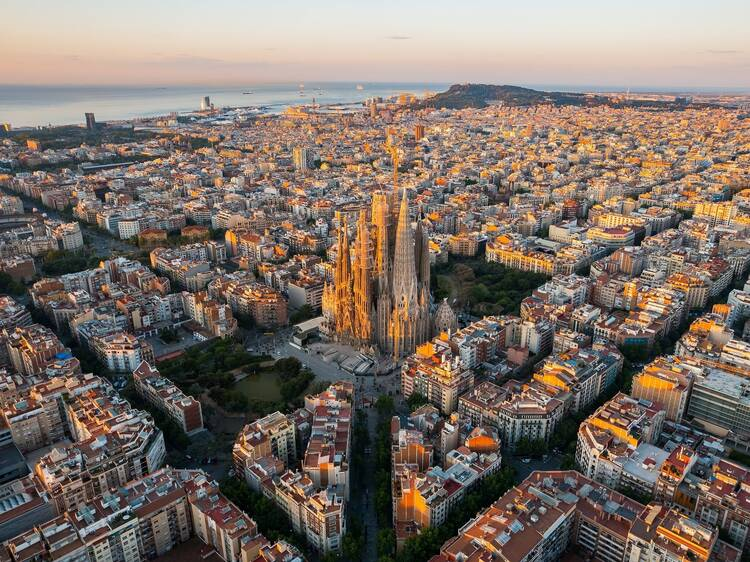

Barcelona
Gaudi'nin izinde bir şehir!


Kopenhag
Mutluluğun başkenti!
Malmö
İskandinav kültürünün bir parçası!
Merhaba! Bu sayfada gezdiğim yerler hakkında kısa yazılar paylaşacağım. Umarım beğenirsiniz! 😊